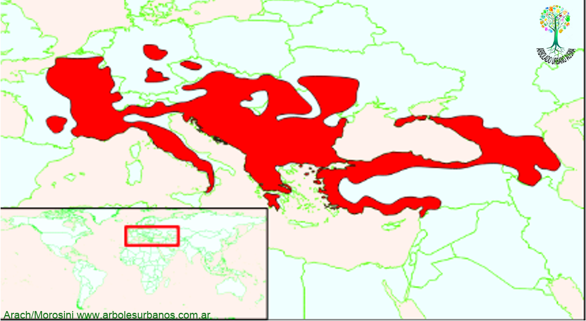

Click en las imágenes para ampliar

{kind=link}
{kind=link}
- NOMBRE CIENTIFICO
- Cornus mas
- FAMILIA
- Cornáceas
- ORIGEN
- Este arbusto es originario del centro de Europa y se extiende por el continente asiático por el Asia menor.
- DESCRIPCION GENERAL
- este árbol de pequeña talla, mayormente caracterizado como arbusto, alcanza solo 4, 5 metros de altura a veces hasta 6, comúnmente ramificándose desde el suelo y formando una copa ovalada o esférica de hasta 4 metros de diámetro. Su corteza madura es de color gris y escamosa, dejando ver tonos anaranjados entre las grietas, característica que se destaca en otoño. Sus hojas tienen una disposición opuesta, son simples de color verde, tonándose rojizas en el otoño antes de caer. Son ovaladas y llegan a medir hasta 10 cm de largo.
- FLORES
- Las flores aparecen a finales del invierno. Son hermafroditas y pequeñas de color amarillos, agrupadas en racimos redondeados, muy numerosas. Tanto la aparición temprana de las flores, como la cantidad, son uno de los valores más apreciados de este arbusto.
- FRUTOS
- Posee unas drupas los frutos de color rojo, de hasta 1,5 cm de largo. Maduran a mediados de otoño, son de textura y sabor agridulce, pero si se los consume inmaduros son de un sabor muy astringente. Cada uno contiene una sola semilla alargada.
- REPRODUCCION
- Se lo multiplica por semillas, también por esquejes. Recordemos que las variedades se reproducen por medio de injertos.
- USOS
- Es de uso ornamental, se lo valora por su profusa floración, también sus frutos vistosos lo hacen particularmente decorativo. Se lo planta en grupos en el límite de cercos y césped. Es recomendable que crezca con reparo del viento, soporta bien la luz directa. Sus frutos son comestibles de gusto ácido tiene propiedades astringentes, también se lo utiliza para hacer aderezos agridulces; por tener poca pectina, para hacer dulces se lo mezcla con otras frutas como ciruelas, cerezas, etc.
- PARTICULARIDADES
- Existen algunas variedades, que destacan distintos colores de follaje, algunos de ellos variegados, o que en otoño presentan tonos rojos y ocres encendidos; otros presentan mejor tamaño de flores y de frutos.